Can a robot that cannot see the difference between two garments feel it, explain it, and act on it?
两件看起来几乎一样的衣物，机器人能否靠“摸”分辨出来，再用语言说清楚，并据此完成分拣？
Fabric is one of the most common materials a robot will ever handle and one of the hardest to perceive. Garment sorting for recycling, laundry automation and assistive dressing all require judgements—which of these two is softer, thicker, more elastic, rougher?—that colour images often cannot support: two fabrics that photograph almost identically can differ strongly in weave, pile and compliance. Touch is exactly the modality that exposes those properties.
织物是机器人最常接触、也最难感知的材料之一。衣物回收分拣、洗衣自动化、辅助穿衣都需要回答“这两件哪件更软、更厚、更有弹性、更粗糙”——而这些判断单靠彩色图像往往无法完成：两块拍起来几乎一样的布，在织法、绒面和顺应性上可能差别很大。触觉正是能暴露这些属性的模态。
The idea of pairing a GelSight sensor with a multimodal large language model comes from MLLM-Fabric, which showed that a vision–language model can compare two fabrics along softness, thickness, elasticity and texture. I took that idea as the starting point and built a complete system around it on a Franka arm: my own tactile force dataset, my own training and evaluation pipeline for the language model, a custom end-effector, and a deployment chain that runs with no force sensor in the loop.
把 GelSight 传感器与多模态大语言模型结合的思路参考了 MLLM-Fabric 这篇论文：它证明了视觉-语言模型可以在柔软度、厚度、弹性和纹理四个维度上比较两块织物。我以此为起点，在 Franka 机械臂上围绕它搭建了一整套系统：自采的触觉力数据集、自建的语言模型训练与评测流水线、自制末端执行器，以及一条回路中不需要力传感器的部署链路。
Three goals drove the work: teach a 7B vision–language model to judge fabric properties from tactile images; measure that ability honestly, on fabrics the model has never touched; and get the whole loop—press, estimate force, reason, rank, grasp, place—running on the real robot.
三个目标贯穿整个工作：让一个 7B 的视觉-语言模型学会从触觉图像判断织物属性；在模型从未摸过的织物上诚实地衡量这种能力；并让“按压-估力-推理-排序-抓取-放置”的完整闭环在真机上跑起来。
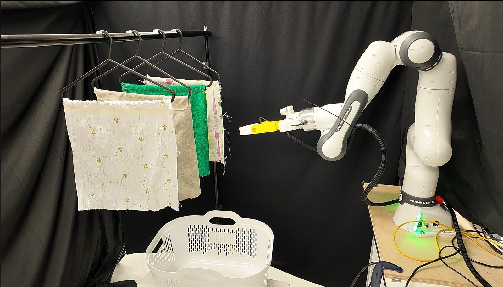
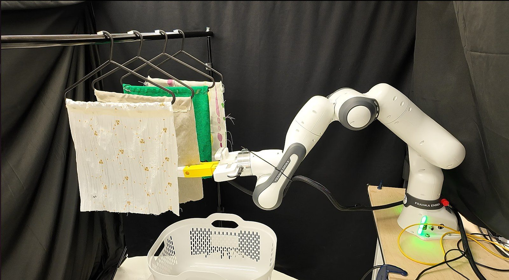
The stock parallel-jaw fingers cannot press or grasp a hanging garment. I designed and 3D-printed two asymmetric fingers that extend the Franka Hand and integrate all three jobs of the demonstration—locating, pressing and grasping—in one tool, so no tool change happens anywhere in the sequence.
原装平行夹爪既按不了也抓不了悬挂的衣物。我设计并 3D 打印了两根不对称手指，延长 Franka Hand，把演示中定位、按压、抓取三件事集成在同一个工具上，整个流程无需换工具。
Three decisions carry the load. Slender, tapered fingers can pass through a hanging garment and isolate a single layer without dragging its neighbours. Ribbed compliant tips are the sacrificial first contact if a finger strikes the hanger or rail—protecting the GelSight’s elastomer and optics, which are the most fragile and expensive parts. And a broad backing paddle opposite the sensor turns a freely yielding garment into a defined press, matching the flat-substrate presses of the training data.
三个设计决定起了关键作用：细长渐缩的手指可以穿过悬挂的衣物、只隔离出单层而不带动相邻衣物；带肋的柔性指尖是手指撞到衣架或横杆时的牺牲件，保护 GelSight 最脆弱也最昂贵的弹性体与光学部件；传感器对面的宽背板把会随意变形的衣物变成一次确定的按压，与训练数据中平面衬底的按压条件一致。
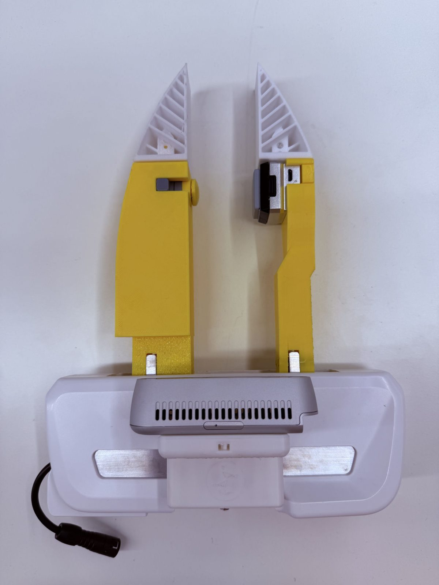
The language model reads each tactile frame together with the contact force at which it was taken, so the robot needs a force value for every press. A robot pressing hanging garments has no force sensor in the loop—so I made the tactile image itself report the force. I collected a dedicated dataset: 200 fabrics pressed by a GelSight Mini on the Franka arm with an ATI Nano17 beneath the fabric as ground truth—401 sessions, 12,178 presses, 99,797 usable frames after quality filtering.
语言模型读取每帧触觉图像时需要同时知道拍摄时的接触力，因此每次按压都要有一个力数值；而机器人按压悬挂衣物时回路里并没有力传感器——于是我让触觉图像自己“报出”力。为此我采集了专门的数据集：在 Franka 上用 GelSight Mini 按压 200 种织物，织物下方放置 ATI Nano17 作为真值——共 401 个采集会话、12,178 次按压，质量过滤后 99,797 帧可用。
Three calibrations underpin its use. Cross-correlating force with image change over 120 presses measured a 40 ms camera–force delay; applying the correction moved the peak frame in 38% of presses. Three independent checks established that force labels are trustworthy up to 22 N. And the photometric reconstruction passed its criteria only marginally, so single-frame magnitudes are never used as absolute labels.
三项标定支撑了它的使用：在 120 次按压上做力与图像变化的互相关，测得相机–力的时延为 40 ms，校正后 38% 的按压峰值帧发生了变化；三项独立检查确定力标签在 22 N 以内可信；光度重建仅勉强通过判据，因此单帧重建幅值从不作为绝对标签使用。
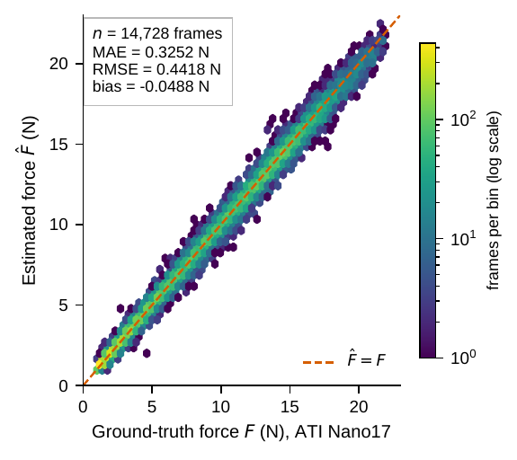
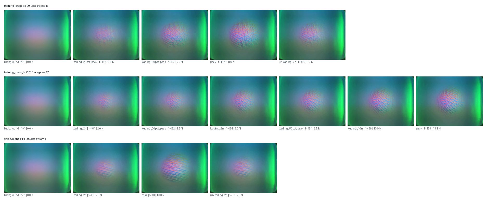
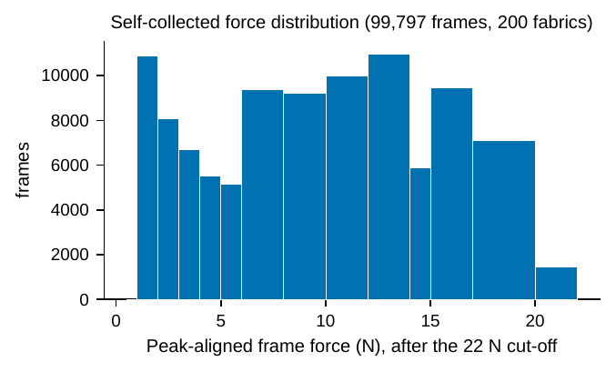
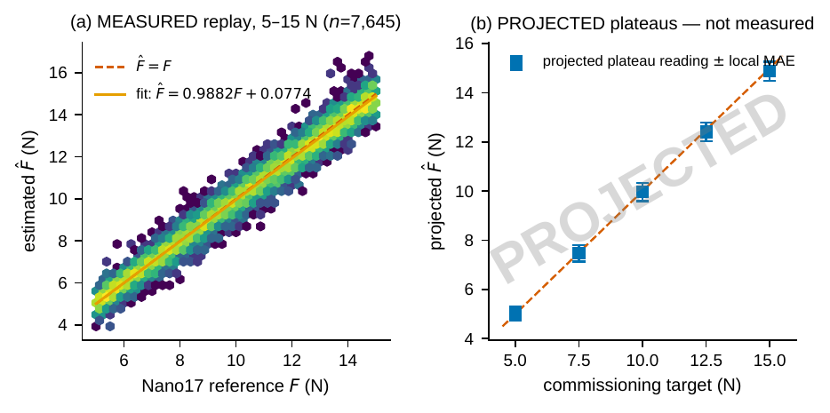
Training data come from the public MLLM-Fabric image set—200 fabrics, each photographed and pressed by a GelSight at four increasing forces, with ordinal labels (low / medium / high) for softness, thickness, elasticity and texture. I wrote the whole pipeline on top of it: a single prompt generator that turns a fabric pair into a question, an image compositor, the training loop, and the evaluation harness. Every comparison in the project—3,937 training pairs, 400 test pairs, and 34,883 pairs I constructed myself—goes through that one generator.
训练数据来自公开的 MLLM-Fabric 图像集——200 种织物，每种都有 RGB 照片和 GelSight 在四个递增力值下的按压图像，并在柔软度、厚度、弹性、纹理四个属性上标注了低/中/高三个等级。我在此之上写了完整的流水线：把一对织物变成一个问题的提示生成器、拼图模块、训练循环和评测框架。项目里所有比较——3,937 组训练对、400 组测试对，以及我自己构造的 34,883 组——都经由这同一个生成器。
Qwen2.5-VL-7B-Instruct was fine-tuned with QLoRA (4-bit base, rank-32 adapters, 80.7 M trainable parameters) on a single H100. Each input is a composite image—two rows, one per fabric: an RGB view followed by four GelSight frames at increasing force—plus the force values in text. I measured that beyond the processor’s pixel budget a larger stored image adds no model-visible resolution, which let me cut the upload from 11.76 GB to 1.77 GB with pixel-level equivalence.
Qwen2.5-VL-7B-Instruct 在单张 H100 上用 QLoRA 微调（4-bit 基座、秩 32 适配器、80.7 M 可训练参数）。每个输入是一张拼接图：两行各代表一块织物，先是 RGB 视图，然后是四帧力逐渐增大的 GelSight 图像，再加上文本中的力数值。我验证了超过处理器像素预算后更大的图片不会增加模型可见的分辨率，于是把上传量从 11.76 GB 压到 1.77 GB 而保持像素级等价。
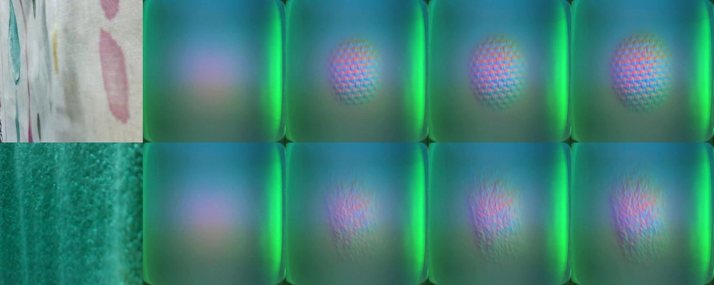
A generative model has to be turned into a discrete answer somehow. I built two instruments. A free-text parser, calibrated against all 3,937 training rationales with a measured noise floor of 1.94 percentage points—the first, uncalibrated version carried a 6.36-point bias, which is why I calibrate the parser before trusting any number it produces. And a forced-choice readout that compares candidate log-likelihoods, which needs no parser but is numerically fragile: in bfloat16 the representable values near a log-likelihood of 16–32 are 0.125 apart, while genuine differences are often 0.01–0.2. An early bf16 run collapsed most items into exact ties and produced a plausible-looking but fake accuracy of 0.75. All scoring is now in fp32; none of the 7,600 scored items tied.
生成式模型的输出总得变成一个离散答案。我做了两套工具：一个用全部 3,937 条训练解释标定过的自由文本解析器，测得噪声底 1.94 个百分点——未标定的第一版有 6.36 个百分点的系统偏差，所以解析器必须先标定再使用；另一个是比较候选答案对数似然的强制二选一读出，它不需要解析器，但在数值上很脆弱：bfloat16 在对数似然 16–32 附近的可表示间隔是 0.125，而真实差异常常只有 0.01–0.2。早期一次 bf16 运行把大部分样本压成了精确平局，得到一个看似合理实则虚假的 0.75 准确率。现在所有打分都用 fp32，7,600 个样本中没有一个平局。
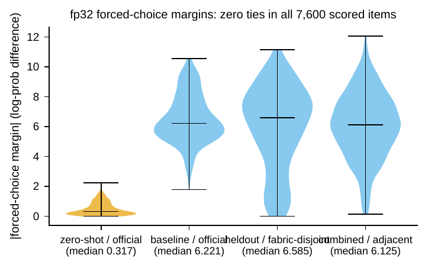
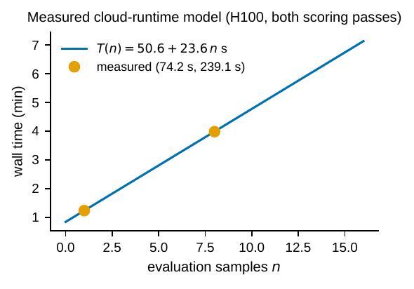
A high score on fabrics the model has already touched proves little: if the training pairs reveal every fabric’s level, a look-up table answers the test without reading a single pixel. So I designed the evaluation around that risk. For every (training set, test set) pair I compute how far pure look-up could get—the ceiling—and report each accuracy next to it. And I built a second test on fabrics the model never saw: a 160/40 fabric-disjoint split in which no training pair involves a test fabric, verified by a learned domain probe that cannot tell the two sides apart.
在模型已经摸过的织物上拿高分并不能说明什么：如果训练对已经暴露了每块织物的等级，一张查找表一个像素都不用看就能答题。所以我把评测设计围绕这个风险展开：对每一组（训练集, 测试集）都计算纯查表能达到的上限，并把每个准确率与上限并列报告；同时构造了一个模型从未见过的织物测试——160/40 的织物不相交划分，没有任何训练对涉及测试织物，并用学习型域探针验证两侧无法区分。
Results: on the seen-fabric test the fine-tuned model scores 0.985, up from 0.49 for the untuned base model. On the unseen-fabric test the same configuration scores 0.865 against a 0.50 ceiling—tactile comparison that transfers to new material. A size-matched control that saw the test fabrics at the same training volume returns to 0.985, so having touched a fabric before is worth +0.12, concentrated almost entirely in Elasticity (+0.37); Thickness and Texture generalise almost perfectly.
结果：在已见织物测试上，微调模型从未微调基座的 0.49 提升到 0.985；在未见织物测试上，同样的配置在 0.50 的上限下得到 0.865——这是能迁移到新材料上的触觉比较能力。一个在相同训练量下见过测试织物的规模匹配对照回到 0.985，说明“摸过这块布”值 +0.12，而且几乎全部集中在弹性这一属性上（+0.37）；厚度与纹理几乎完美泛化。
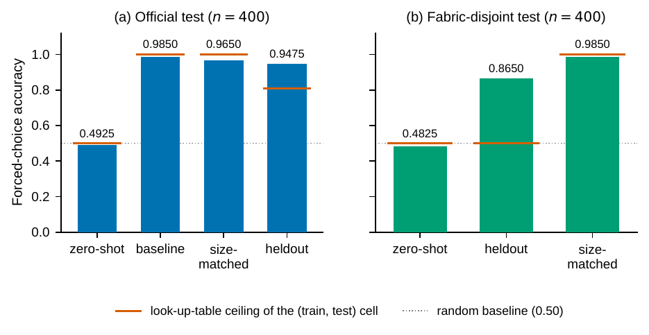
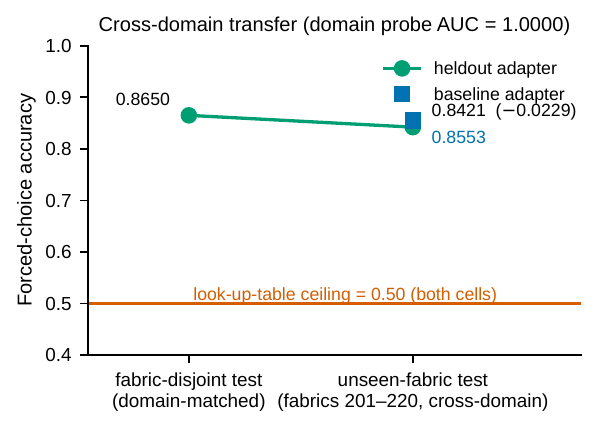
The standard pairs only compare fabrics two grades apart. Real sorting is harder—the difference is often one grade—and the ordinal labels already determine every such comparison: enumerating ordered pairs one grade apart gave me 63,300 adjacent-level pairs with no new labelling. A model trained on two-grade pairs alone reaches 0.839 on this finer task (ceiling 0.50); adding 4,000 of the enumerated pairs to training raises it to 0.975. Ablations then bound what the model actually relies on: swapping the left/right indices changes only 4 of 400 predictions, and rewriting the force text to the robot’s own force ladder changes none, so the deployment force range does not disturb the model.
标准的比较对只涉及相差两级的织物。真实分拣更难——差别往往只有一级——而等级标注本身已经决定了所有这类比较：枚举相差一级的有序对，我得到了 63,300 组相邻等级对，不需要任何新标注。只用两级对训练的模型在这个更细的任务上达到 0.839（上限 0.50）；把 4,000 组枚举对加入训练后提升到 0.975。消融实验进一步界定了模型真正依赖什么：交换左右索引只改变 400 个预测中的 4 个；把力文本改写成机器人自己的力阶梯一个都不变——说明部署时的力范围不会干扰模型。
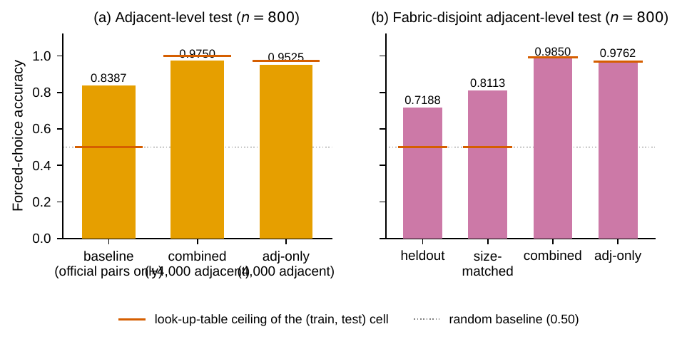
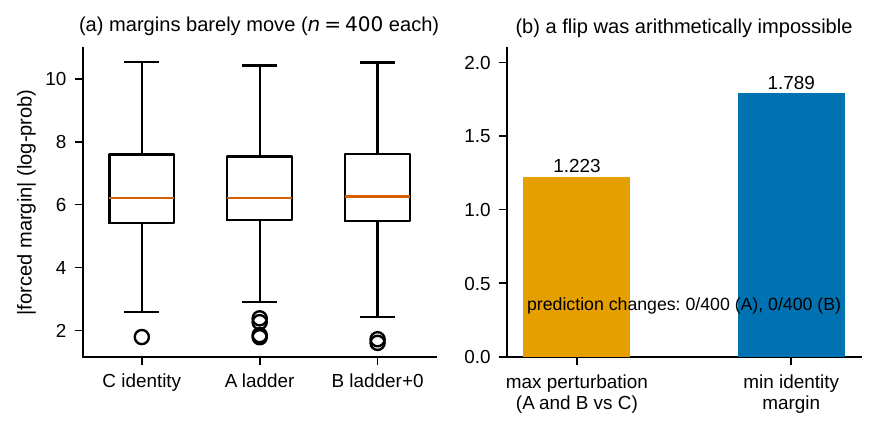
The deployment chain runs locally except for VLM scoring, which runs on a cloud H100 with the same evaluator and adapter as the benchmark, verified by hash. A press trajectory is taught once under zero stiffness by guiding the arm by hand, validated against four recorded-trajectory checks, then replayed with a hard stop that halts the arm within one 20 ms control cycle. Every captured GelSight frame receives a force estimate; a slot selector picks one pre-contact frame and three loading frames nearest the ladder targets, subject to six gates.
部署链除了 VLM 打分之外全部在本地运行，打分在云端 H100 上进行，使用与基准测试完全相同、经哈希校验的评测器与适配器。按压轨迹在零刚度下手把手示教一次，通过四项轨迹记录检查后回放，并配有能在一个 20 ms 控制周期内停住机械臂的硬停保护。每一帧 GelSight 图像都得到一个力估计；槽位选择器按六道门选出一帧接触前帧和三帧最接近阶梯目标的加载帧。
Four garments give six unordered pairs per property, each evaluated in both presentation orders; a pair counts only if both orders choose the same physical garment. The run completed 48 prompts in 1,005 s, exactly as the two-point timing model predicted. 18 of 24 comparisons were order-consistent; the six contradictions were left unresolved rather than papered over. For the query “suitable for summer clothing” the recommendation layer selected garment F4—lowest thickness, weighted against softness and texture—and attached a warning that elasticity evidence is weak—the property that scored lowest on the unseen-fabric test.
四件衣物在每种属性上构成六个无序对，每对按两种呈现顺序各评一次；只有两种顺序都选中同一件实物时才算数。整轮运行 48 条提示用了 1,005 s，与两点法时间模型的预测完全吻合。24 次比较中 18 次顺序一致，6 次矛盾被如实保留而不是掩盖。对于“适合夏天穿”的查询，推荐层选中了 F4——厚度最低，并以柔软度和纹理加权——同时附上“弹性证据较弱”的提示——弹性正是未见织物测试中得分最低的属性。
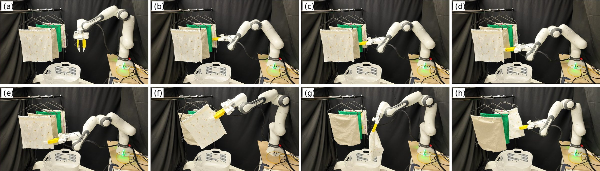
For the manipulation stage I used π0.5 as the vision-language-action backbone. I collected teleoperated demonstrations of the press-grasp-place cycle with a Quest controller mapped to the Franka end-effector, so that a language-conditioned policy could learn the approach, press and single-layer grasp from human motion rather than hand-coded waypoints. The force-estimation and tactile-reasoning modules plug in unchanged, because the policy only needs the “which garment” decision as a goal.
操作阶段我以 π0.5 作为视觉-语言-动作骨干。我用映射到 Franka 末端的 Quest 手柄采集了“按压-抓取-放置”循环的遥操作示教，让语言条件化的策略从人的动作中学习接近、按压与单层抓取，而不是依赖手写路径点。力估计与触觉推理模块无需改动即可接入，因为策略只需要“选哪件衣物”这一目标。
With the project clock running, the recorded demonstration ran the press trajectory in taught-and-replayed mode with hard stops, which gave the safest and most traceable evidence for the dissertation; the π0.5 branch continued in parallel and became the main policy work of the Tactile UMI project, where I fine-tuned π0.5 on calibrated hand-held demonstrations and ran it on a Franka FR3.
考虑到项目周期，论文中记录的演示以示教-回放加硬停的方式执行按压轨迹，这是最安全、最可追溯的证据；π0.5 分支则并行推进，并成为 Tactile UMI 项目中我的主要策略工作——在标定过的手持示教上微调 π0.5，并在 Franka FR3 上实机运行。